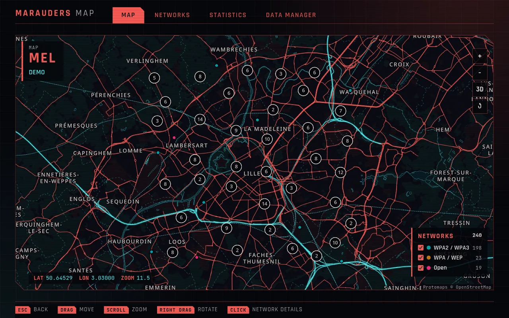
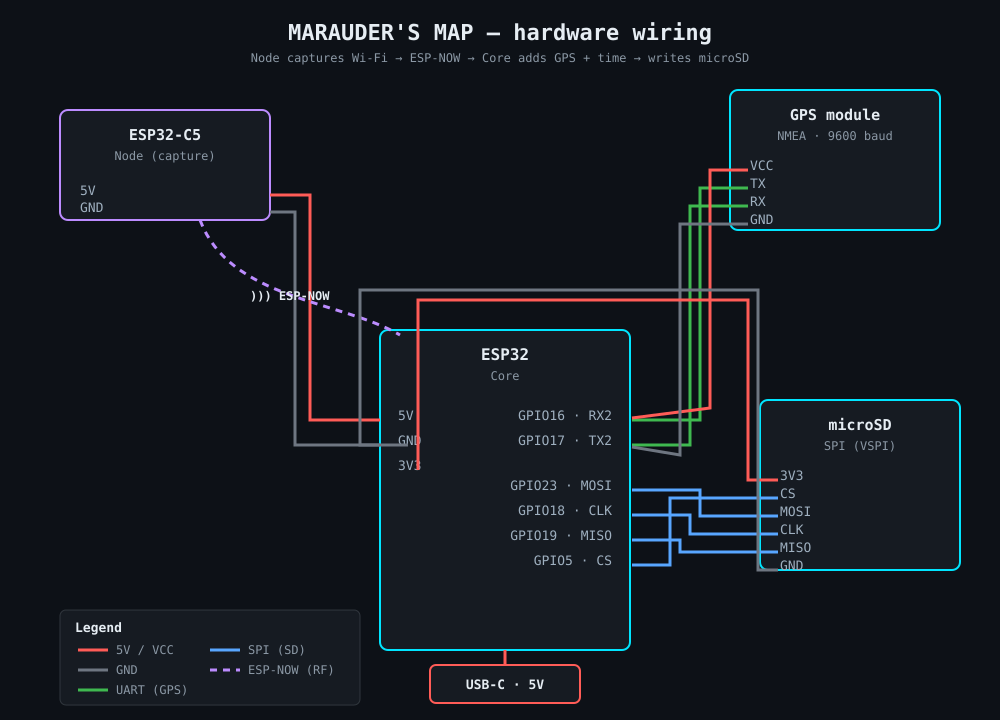
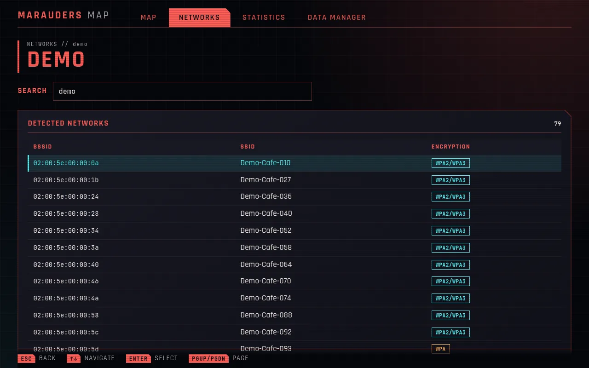
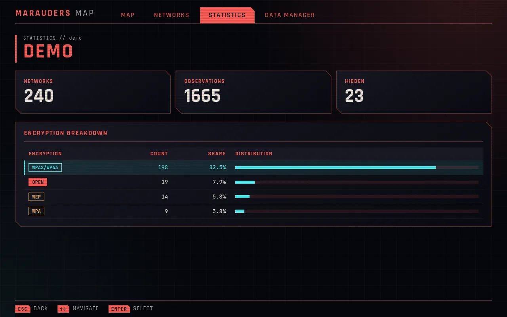
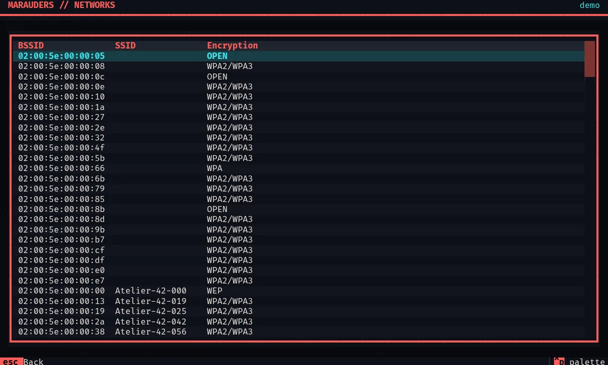
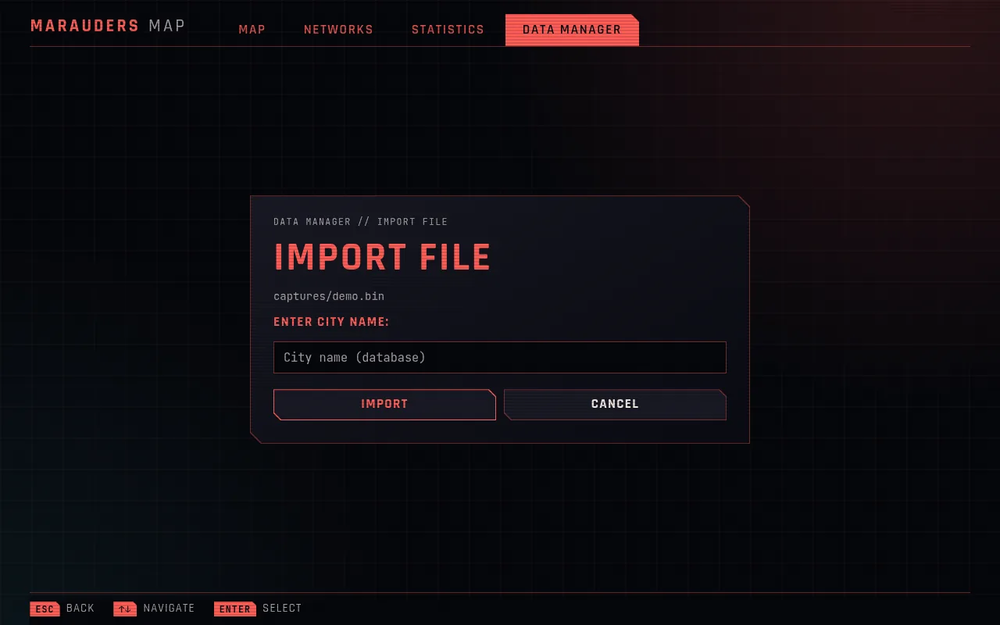

Ship one complete chain
Four nodes, Bluetooth and BLE were too much at once. Narrowing the scope to Wi-Fi with one node gave a result that works from end to end.

01 // SIGNAL CHAIN
Capture and analysis are two separate worlds. The device records in the field with no screen and no connection. The software works later, at the desk, from a file on a microSD card.
ESP32-C5
Listens in promiscuous mode and forwards beacon frames, untouched, over ESP-NOW.
ESP32 + GPS
Receives each frame and adds the current GPS position and UTC time.
MMAP binary
Appends every record to a compact file, keeping the raw frame intact.
Python + SQLite
Decodes frames into one database per city. A file already imported is skipped by its SHA-256 hash.
TUI + web GUI
Browse networks and statistics in a terminal or a browser, and see them on an offline map.
02 // ANATOMY OF A RECORD
Every observation on the card is 18 bytes of context followed by the raw 802.11 frame. Select a field to find its bytes. This record is synthetic, and it decodes correctly with the project's own parser.
Added by the deviceDecoded by the appKept, not used yet
03 // HARDWARE

This project was my first step into electronics: back to the basics of electricity, and learning how to connect modules together. It was the part I enjoyed most, and it brought back what I learned as a military radio specialist.
Keeping GPS and storage on the Core keeps the Node simple. Decoding happens later on the computer, so a decoder fix can apply to data that was already captured.
04 // INTERFACES
The terminal is for quick, keyboard-driven use. The browser adds search, pagination and the map. Both read the same local databases, and no account or internet connection is needed.




Screens show synthetic data. No real network or location is published on this page.
05 // RESULTS
WPA and WEP are recomputed from the stored frames: the current app still reports 17 of these WPA networks as WEP, a known defect.
Four nodes, Bluetooth and BLE were too much at once. Narrowing the scope to Wi-Fi with one node gave a result that works from end to end.
The project started in Rust, but the learning curve slowed it down. Moving to Python made it much faster to build and test ideas.
With no screen, I can't tell during an outing whether the capture is running. That limits how long I can safely stay out.
06 // WHAT'S NEXT
Capture is passive: the device only listens to public beacons, and never connects to or attacks a network. Captures stay on my machine and out of the repository, because they link networks to places and times.